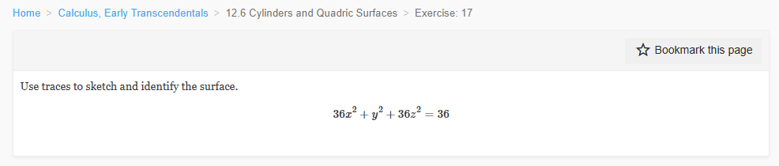
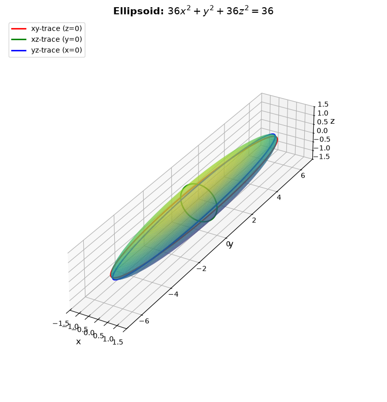
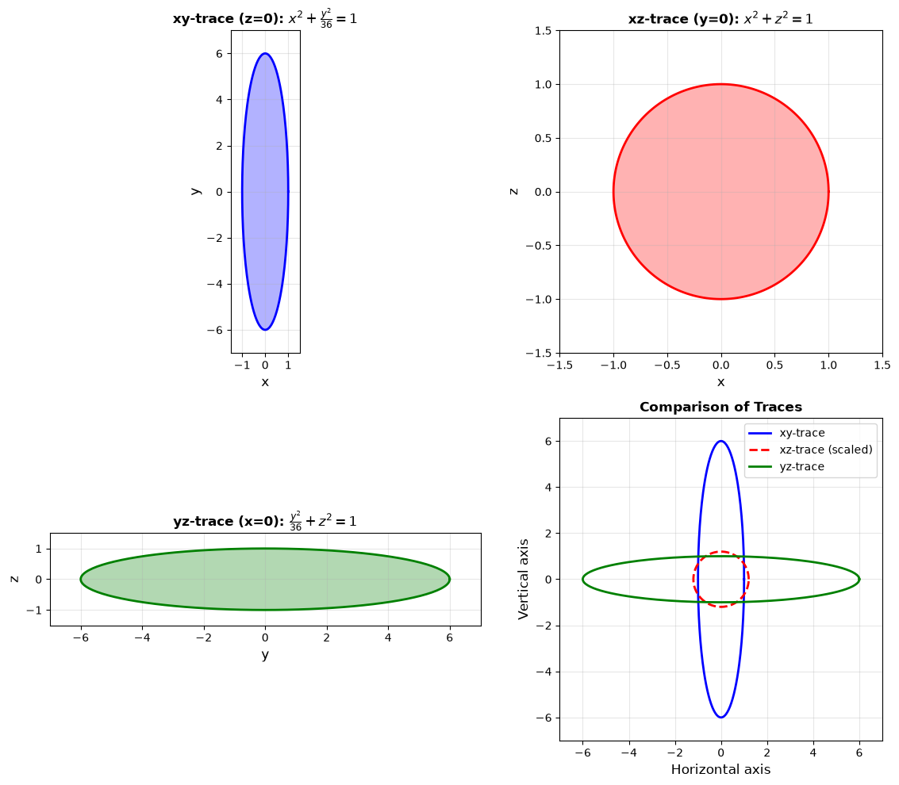
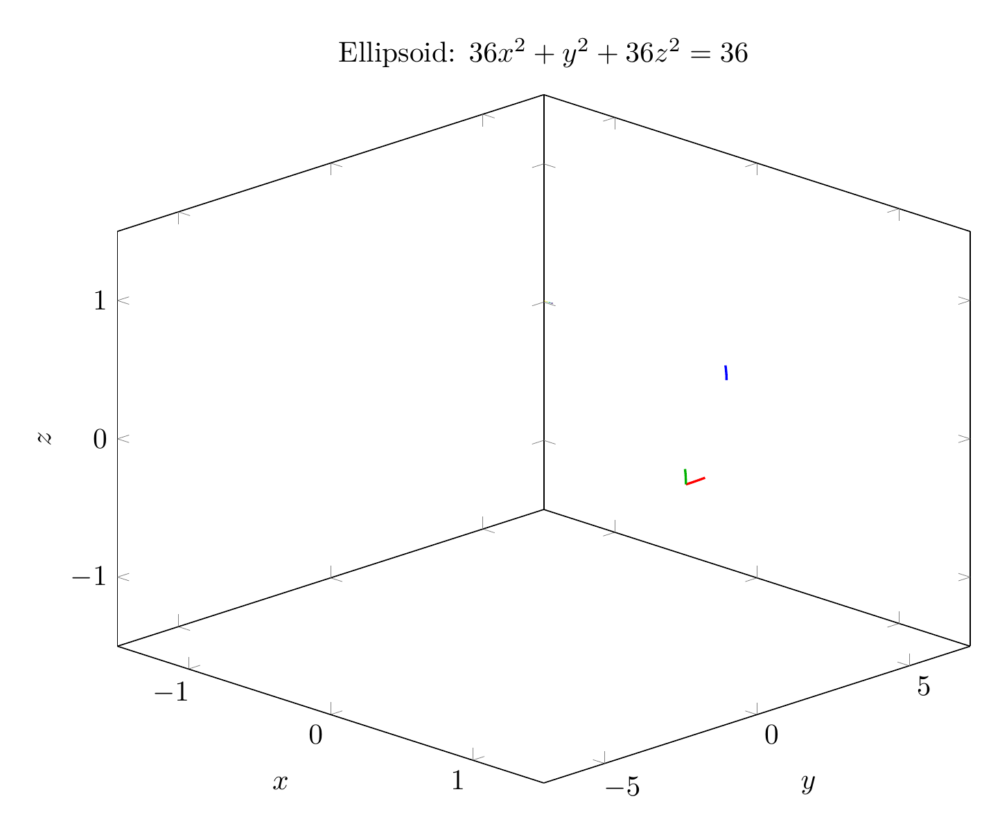
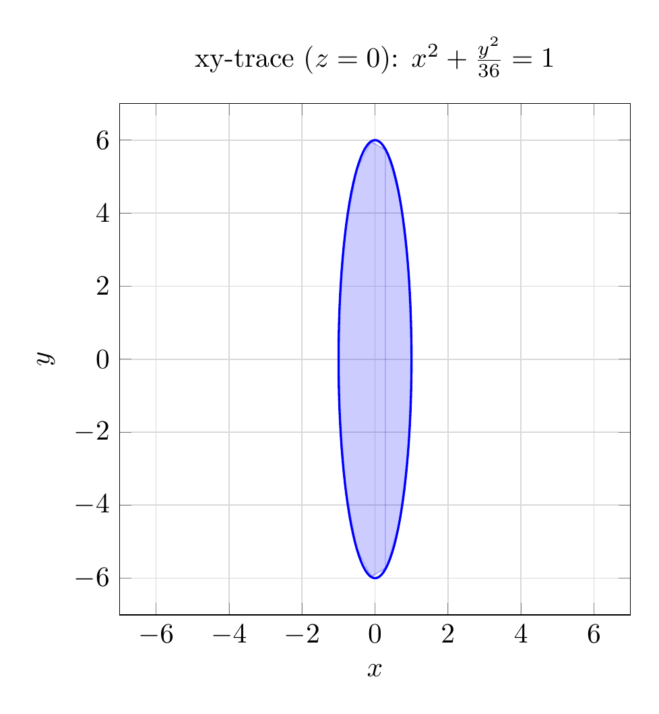

Path: mcma-Qwen3.5-397B-A17B/calculus-12.6.17/chat_20260823_213318_385342_utc_0800
Problem
Please solve the math problem in the image.

End of problem
Answer
# Solution: Identifying the Surface Using Traces
## Step 1: Rewrite the Equation in Standard Form
Given the equation:
$$36x^2 + y^2 + 36z^2 = 36$$
Divide both sides by 36:
$$x^2 + \frac{y^2}{36} + z^2 = 1$$
Rewrite in standard ellipsoid form:
$$\frac{x^2}{1^2} + \frac{y^2}{6^2} + \frac{z^2}{1^2} = 1$$
This is the equation of an **ellipsoid** centered at the origin with semi-axes:
- $a = 1$ (along the x-axis)
- $b = 6$ (along the y-axis)
- $c = 1$ (along the z-axis)
## Step 2: Analyze the Traces
To sketch the surface using traces, we examine the intersection of the surface with the three coordinate planes.
### xy-trace (z = 0):
Setting $z = 0$:
$$x^2 + \frac{y^2}{36} = 1$$
This is an **ellipse** in the xy-plane with:
- x-intercepts: $(\pm 1, 0, 0)$
- y-intercepts: $(0, \pm 6, 0)$
### xz-trace (y = 0):
Setting $y = 0$:
$$x^2 + z^2 = 1$$
This is a **circle** in the xz-plane with radius 1, centered at the origin.
### yz-trace (x = 0):
Setting $x = 0$:
$$\frac{y^2}{36} + z^2 = 1$$
This is an **ellipse** in the yz-plane with:
- y-intercepts: $(0, \pm 6, 0)$
- z-intercepts: $(0, 0, \pm 1)$
## Step 3: Sketch the Surface
Using the traces:
1. **Draw the three coordinate plane traces:**
- In the xy-plane: ellipse extending from $x = \pm 1$ to $y = \pm 6$
- In the xz-plane: circle of radius 1
- In the yz-plane: ellipse extending from $y = \pm 6$ to $z = \pm 1$
2. **Connect the traces smoothly** to form a closed, oval-shaped surface.
3. **Key features:**
- The surface is elongated along the y-axis (length 12)
- The surface is symmetric about all three coordinate planes
- The surface passes through the points $(\pm 1, 0, 0)$, $(0, \pm 6, 0)$, and $(0, 0, \pm 1)$
## Conclusion
The surface $36x^2 + y^2 + 36z^2 = 36$ is an **ellipsoid** centered at the origin with semi-axes of lengths 1, 6, and 1 along the x, y, and z axes respectively.
The ellipsoid is stretched along the y-axis, making it appear as a prolate spheroid (cigar-shaped) when viewed from certain angles.
$$\boxed{\text{Ellipsoid}}$$
---


\documentclass[border=10pt]{standalone}
\usepackage{pgfplots}
\usepgfplotslibrary{colormaps}
\pgfplotsset{compat=1.18}
\begin{document}
\begin{tikzpicture}
\begin{axis}[
view={45}{25},
xlabel={$x$},
ylabel={$y$},
zlabel={$z$},
title={Ellipsoid: $36x^2 + y^2 + 36z^2 = 36$},
domain=0:2*pi,
y domain=0:pi,
samples=30,
samples y=20,
z buffer=sort,
colormap/viridis,
width=12cm,
height=10cm,
xmin=-1.5, xmax=1.5,
ymin=-7, ymax=7,
zmin=-1.5, zmax=1.5,
]
% Ellipsoid surface
\addplot3[surf, opacity=0.6, shader=interp]
({sin(y)*cos(x)}, {6*sin(y)*sin(x)}, {cos(y)});
% xy-trace (z=0)
\addplot3[red, thick, domain=0:2*pi, samples=50]
({cos(x)}, {6*sin(x)}, 0);
% xz-trace (y=0)
\addplot3[green!70!black, thick, domain=0:2*pi, samples=50]
({cos(x)}, 0, {sin(x)});
% yz-trace (x=0)
\addplot3[blue, thick, domain=0:2*pi, samples=50]
(0, {6*cos(x)}, {sin(x)});
\end{axis}
\end{tikzpicture}
\end{document}

\documentclass[border=10pt]{standalone}
\usepackage{pgfplots}
\pgfplotsset{compat=1.18}
\begin{document}
% xy-trace (z=0)
\begin{tikzpicture}
\begin{axis}[
xlabel={$x$},
ylabel={$y$},
title={xy-trace ($z=0$): $x^2 + \frac{y^2}{36} = 1$},
axis equal,
grid=both,
grid style={gray!30},
width=8cm,
height=8cm,
xmin=-1.5, xmax=1.5,
ymin=-7, ymax=7,
]
\addplot[blue, thick, domain=0:2*pi, samples=100]
({cos(deg(x))}, {6*sin(deg(x))});
\addplot[blue, fill, opacity=0.2]
({cos(deg(x))}, {6*sin(deg(x))}) -- cycle;
\end{axis}
\end{tikzpicture}
\end{document}

End of answer